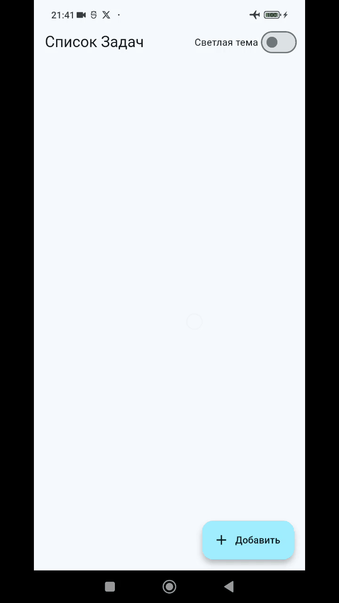
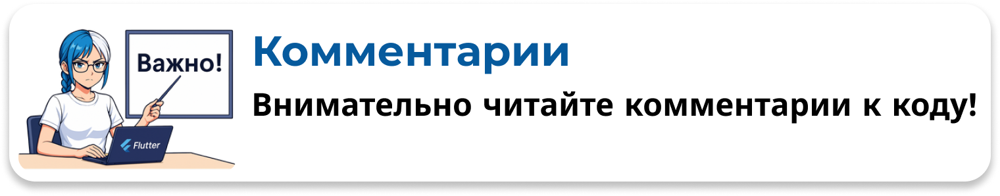

Список Задач + SharedPreference (задачи)
➡️Ссылка на репозиторий с кодом этого
урока
Локальное хранилище

Теперь добавим возможность сохранять, получать, обновлять и удалять задачи с помощью локального хранилища
1. Добавляем модель Task
Файл models/task.dart


class Task {
final int id;
String text;
bool isDone;
Task({
required this.id,
required this.text,
this.isDone = false,
});
// Фабричный конструктор для создания Task из Map (JSON)
factory Task.fromJson(Map<String, dynamic> json) {
return Task(
id: json['id'],
text: json['text'],
isDone: json['isDone'],
);
}
// Метод для преобразования Task в Map (JSON)
Map<String, dynamic> toJson() {
return {
'id': id,
'text': text,
'isDone': isDone,
};
}
// Метод для копирования объекта с определенными значениями
Task copyWith({
int? id,
String? text,
bool? isDone,
}) {
return Task(
id: id ?? this.id,
text: text ?? this.text,
isDone: isDone ?? this.isDone,
);
}
}
2. Добавляем сервис хранения StorageService
Функционал работы сервиса по работе с данными списка задач будет значительно интересней, потому что это более сложная структура и такие данные лучше хранить в более продвинутых хранилищах, например в базе данных, но мы выполним этот челендж в академических целях 😎
Задачи будем сохранять в следующем виде
| Ключ | Значение |
|---|---|
todo_1 |
{"id":1, "text":"Выучить Python", "isDone": false} |
todo_2 |
{"id":2, "text":"Поспать", "isDone": true} |
Ключ и ID будем автоматически
генерировать

Файл services/storage_service.dart
import 'dart:convert';
import 'package:shared_preferences/shared_preferences.dart';
import '../models/task.dart';
class StorageService {
static const taskPrefix = 'todo_'; // префикс для ключей задач
static const themeKey = 'isDarkMode'; // ключ для цветовой темы
/// Сохранить значение цветовой темы
Future<void> saveThemeMode(bool isDarkMode) async {
try {
final prefs = await SharedPreferences.getInstance();
await prefs.setBool(themeKey, isDarkMode);
} catch (e) {
throw Exception('Ошибка при сохранении темы: $e');
}
}
/// Получить значение сохранённой цветовой темы
Future<bool> getThemeMode() async {
try {
final prefs = await SharedPreferences.getInstance();
// Возвращаем сохранённое значение или false, если ничего не найдено
return prefs.getBool(themeKey) ?? false;
} catch (e) {
throw Exception('Ошибка при загрузке темы: $e');
}
}
// МЕТОДЫ ДЛЯ РАБОТЫ СО СПИСКОМ ЗАДАЧ
/// Получить список всех задач
Future<List<Task>> getAllTasks() async {
try {
final prefs = await SharedPreferences.getInstance();
// Получить все ключи из хранилища
final allKeys = prefs.getKeys();
// Найти ключи которые относятся к задачам
final taskKeys = allKeys.where((key) => key.startsWith(taskPrefix));
final List<Task> tasks = [];
// 1 Перебираем ключи задач в цикле
// 2 По ключу получаем значение задачи из хранилища
// 3 Декодируем JSON обратно в Map и создаём объект Task
// 4 Добавляем объект Task в список и потом возвращаем его
for (final key in taskKeys) {
final taskJsonString = prefs.getString(key);
if (taskJsonString != null) {
// Декодируем JSON обратно в Map
final taskMap = jsonDecode(taskJsonString);
// Создаем объект Task из Map и добавляем в список
tasks.add(Task.fromJson(taskMap));
}
}
return tasks;
} catch (e) {
throw Exception('Ошибка при загрузке всех задач: $e');
}
}
// Вспомогательный метод для генерации ключа по ID задачи
String _getTaskKey(int id) => '$taskPrefix$id';
/// Создать новую задачу
Future<Task> createTask(String text) async {
try {
// Получаем список всех задач
final allTasks = await getAllTasks();
int maxId = 0;
// Находим максимальный ID
for (var task in allTasks) {
if (task.id > maxId) {
maxId = task.id;
}
}
// Генерируем новый ID, если список задач пуст то id = 1
final newId = allTasks.isNotEmpty ? maxId + 1 : 1;
// Создаем новую задачу с заданным ID
final newTask = Task(id: newId, text: text, isDone: false);
// Сохраняем новую задачу в хранилище
final prefs = await SharedPreferences.getInstance();
final key = _getTaskKey(newTask.id);
final taskJson = jsonEncode(newTask.toJson());
await prefs.setString(key, taskJson);
return newTask;
} catch (e) {
throw Exception('Ошибка при создании задачи: $e');
}
}
/// Обновить существующую задачу
Future<void> updateTask(Task task) async {
try {
final prefs = await SharedPreferences.getInstance();
// Фомируем ключ для локального хранилища
final key = _getTaskKey(task.id);
// Кодируем обновлённый объект Task в JSON
final taskJson = jsonEncode(task.toJson());
// Перезаписываем значение по существующему ключу
await prefs.setString(key, taskJson);
} catch (e) {
throw Exception('Ошибка при обновлении задачи с ID ${task.id}: $e');
}
}
/// Удалить задачу по её ID
Future<void> deleteTask(int id) async {
try {
final prefs = await SharedPreferences.getInstance();
final key = _getTaskKey(id);
await prefs.remove(key);
} catch (e) {
throw Exception('Ошибка при удалении задачи с ID $id: $e');
}
}
}
Можно подумать, что каждый вызов await
SharedPreferences.getInstance() в каждом методе заново читает весь файл с настройками
с диска, что было бы медленно. Но это не так.
Плагин shared_preferences работает очень грамотно:
-
Кэширование экземпляра: Первый вызов
getInstance()действительно выполняет асинхронную операцию: он связывается с нативной частью (Swift/Kotlin), чтобы получить доступ к хранилищу (NSUserDefaultsна iOS,SharedPreferencesна Android). -
Возврат из кэша: Все последующие вызовы
getInstance()в рамках одного запуска приложения почти мгновенны. Плагин кэширует полученный экземпляр и просто возвращает ссылку на него. Повторной “дорогой” операции не происходит.
Объяснение работы всех методов сервиса
getAllTasks() Получить список всех задач
- Получает доступ к локальному хранилищу
SharedPreferences. - Извлекает все ключи, которые начинаются с префикса
todo_- это ключи, под которыми хранятся задачи. - Для каждого такого ключа получает строку в формате JSON.
- Декодирует JSON в объект Map.
- Создаёт объект
Taskиз Map с помощью конструктораTask.fromJson. - Собирает все объекты
Taskв список и возвращает его.
Future<List<Task>> getAllTasks() async {
try {
final prefs = await SharedPreferences.getInstance();
// Получить все ключи из хранилища
final allKeys = prefs.getKeys();
// Найти ключи которые относятся к задачам
final taskKeys = allKeys.where((key) => key.startsWith(taskPrefix));
final List<Task> tasks = [];
// 1 Перебираем ключи задач в цикле
// 2 По ключу получаем значение задачи из хранилища
// 3 Декодируем JSON обратно в Map и создаём объект Task
// 4 Добавляем объект Task в список и потом возвращаем его
for (final key in taskKeys) {
final taskJsonString = prefs.getString(key);
if (taskJsonString != null) {
// Декодируем JSON обратно в Map
final taskMap = jsonDecode(taskJsonString);
// Создаем объект Task из Map и добавляем в список
tasks.add(Task.fromJson(taskMap));
}
}
return tasks;
} catch (e) {
throw Exception('Ошибка при загрузке всех задач: $e');
}
}
createTask(String text) Создать новую задачу
- Сначала получает список всех текущих задач, чтобы определить максимальный существующий ID.
- Генерирует новый ID для задачи:
если задач нет ID будет 1, иначе максимальный ID + 1. - Создаёт новый объект
Taskс этим ID, переданным текстом и статусомisDone = false. - Преобразует объект задачи в JSON-строку.
- Сохраняет JSON в SharedPreferences под ключом
todo_<newId>. - Возвращает созданный объект задачи.
Future<Task> createTask(String text) async {
try {
// Получаем список всех задач
final allTasks = await getAllTasks();
int maxId = 0;
// Находим максимальный ID
for (var task in allTasks) {
if (task.id > maxId) {
maxId = task.id;
}
}
// Генерируем новый ID, если список задач пуст то id = 1
final newId = allTasks.isNotEmpty ? maxId + 1 : 1;
// Создаем новую задачу с заданным ID
final newTask = Task(id: newId, text: text, isDone: false);
// Сохраняем новую задачу в хранилище
final prefs = await SharedPreferences.getInstance();
final key = _getTaskKey(newTask.id);
final taskJson = jsonEncode(newTask.toJson());
await prefs.setString(key, taskJson);
return newTask;
} catch (e) {
throw Exception('Ошибка при создании задачи: $e');
}
}
updateTask(Task task) Обновить существующую
задачу
- Получает доступ к SharedPreferences.
- Формирует ключ задачи по её ID
todo_<id>. - Кодирует обновлённый объект задачи в JSON.
- Перезаписывает значение по ключу в SharedPreferences.
- Если возникнет ошибка - выбрасывает исключение с описанием.
Future<void> updateTask(Task task) async {
try {
final prefs = await SharedPreferences.getInstance();
// Фомируем ключ для локального хранилища
final key = _getTaskKey(task.id);
// Кодируем обновлённый объект Task в JSON
final taskJson = jsonEncode(task.toJson());
// Перезаписываем значение по существующему ключу
await prefs.setString(key, taskJson);
} catch (e) {
throw Exception('Ошибка при обновлении задачи с ID ${task.id}: $e');
}
}
deleteTask(int id) Удалить задачу по её ID
- Получает доступ к SharedPreferences.
- Формирует ключ задачи по ID —
todo_<id>. - Удаляет запись из SharedPreferences по этому ключу.
- Если удаление не удалось, выбрасывает исключение с описанием.
Future<void> deleteTask(int id) async {
try {
final prefs = await SharedPreferences.getInstance();
final key = _getTaskKey(id);
await prefs.remove(key);
} catch (e) {
throw Exception('Ошибка при удалении задачи с ID $id: $e');
}
}
3. Добавляем ViewModel для управления экраном
ViewModel будет управлять состоянием и всей логикой работы экрана. Она
будет использовать StorageService для работы с данными в локальном
хранилище.

Для корректной работы реактивной системы и своевременного обновления UI необходимо соблюдать следующие
правила при работе с коллекцией задач _tasks
- Каждая задача
Task, должна иметь уникальныйID
Сделаем простую генерацию IDid: _tasks.isNotEmpty ? _tasks.last.id+1 : 0, - Механизм Реактивности и Принцип Иммутабельности
- Подписчики (виджеты) реагируют на изменение состояния
_tasksтолько в том случае, если изменяется ссылка на сам объект списка. - Система управления состоянием отслеживает изменения путем сравнения ссылок, а не глубокого анализа содержимого объектов.
- Подписчики будут реагировать на конкретное изменение состояния
_tasks
- Либо когда список полностью обновляется новым
- Либо когда в список добавляется или удаляется значение
НО!Оповещение об изменениине сработает, если изменить внутренние состояние объекта списка!
Например _tasks[index].isDone = !_tasks[index].isDone не сработает!!!
Нужно менять полностью весь список или полностью
элемент списка!!!

Файл viewsmodel/todo_viewmodel.dart
import 'package:flutter/material.dart';
import '../models/task.dart';
import '../services/storage_service.dart';
class ToDoViewModel extends ChangeNotifier {
// Получаем доступ к сервису хранилища
final StorageService _storageService = StorageService();
// Добавляем TextEditingController в ViewModel
final TextEditingController textEditingController = TextEditingController();
bool _isDarkMode = false;
bool get isDarkMode => _isDarkMode;
// Состояние для списка задач
List<Task> _tasks = [];
List<Task> get tasks => _tasks;
ToDoViewModel() {
// При создании ViewModel сразу загружаем задачи
loadTasks();
}
/// Переключение цветовой темы
void toggleTheme() {
// Изменяем состояние
_isDarkMode = !_isDarkMode;
// Сохраняем значение в SharedPreferences
_storageService.saveThemeMode(_isDarkMode);
// Уведомляем слушателей, чтобы они перестраивались
notifyListeners();
}
/// Загрузить все задачи из сервиса
Future<void> loadTasks() async {
_tasks = await _storageService.getAllTasks();
_isDarkMode = await _storageService.getThemeMode();
// Уведомляем UI, что данные изменились и нужно перерисоваться
notifyListeners();
}
/// Добавить новую задачу.
Future<void> addTask(String text) async {
if (text.isEmpty) return;
// Создаём новую задачу, сохраняем в хранилище
final newTask = await _storageService.createTask(text);
// Добавляем в список _tasks для отображения в UI
_tasks.add(newTask);
// Уведомляем UI, что данные изменились и нужно перерисоваться
notifyListeners();
}
/// Обновить статус выполнения задачи
Future<void> updateTaskStatus(int id, bool isDone) async {
// Находим правильный индекс задачи в списке
final taskIndex = _tasks.indexWhere((task) => task.id == id);
// Создаём копию задачи с обновленным статусом
final updatedTask = _tasks[taskIndex].copyWith(isDone: isDone);
await _storageService.updateTask(updatedTask);
_tasks[taskIndex] = updatedTask;
notifyListeners();
}
/// Удалить задачу по ID.
Future<void> deleteTask(int id) async {
// Удаляем задачу из списка для отображения UI
_tasks.removeWhere((task) => task.id == id);
notifyListeners();
// Удаляем задачу по ID из хранилища
await _storageService.deleteTask(id);
}
}
4. Вёрстка Экрана ToDoScreen
Файл views/todo_screen.dart
import 'package:flutter/material.dart';
import 'package:provider/provider.dart';
import '../models/task.dart';
import '../viewmodels/todo_viewmodel.dart';
class ToDoScreen extends StatelessWidget {
const ToDoScreen({super.key});
@override
Widget build(BuildContext context) {
// Получаем экземпляр ViewModel и подписываемся на изменения
final viewModel = context.watch<ToDoViewModel>();
return Scaffold(
appBar: AppBar(
title: const Text('Список Задач'),
actions: [
Center(
child: Text(viewModel.isDarkMode ? 'Темная тема' : 'Светлая тема'),
),
Switch(
// Используем ViewModel для управления состоянием переключателя
value: viewModel.isDarkMode,
onChanged: (_) => viewModel.toggleTheme(),
),
const SizedBox(width: 8),
],
),
body: ListView.builder(
itemCount: viewModel.tasks.length,
itemBuilder: (context, index) {
final task = viewModel.tasks[index]; // Получаем задачу
return TaskItem(task: task);
},
),
floatingActionButton: FloatingActionButton.extended(
// Показать диалоговое окно
onPressed: () => _showAddTaskDialog(context),
label: const Text('Добавить'),
icon: const Icon(Icons.add),
),
);
}
/// Показать диалоговое окно для добавления задачи
void _showAddTaskDialog(BuildContext context) {
final viewModel = context.read<ToDoViewModel>();
// Показываем диалоговое окно
showDialog(
context: context,
builder: (context) {
return AlertDialog(
title: const Text('Добавить задачу'),
content: TextField(
controller: viewModel.textEditingController,
autofocus: true,
decoration: InputDecoration(hintText: "Введите текст задачи"),
),
actions: [
TextButton(
onPressed: () => Navigator.of(context).pop(),
child: const Text('Отмена'),
),
TextButton(
onPressed: () {
// Добавление задачи
viewModel.addTask(viewModel.textEditingController.text);
viewModel.textEditingController.clear();
Navigator.of(context).pop();
},
child: const Text('Добавить'),
),
],
);
},
);
}
}
/// Карточка задачи
class TaskItem extends StatelessWidget {
final Task task;
const TaskItem({super.key, required this.task});
@override
Widget build(BuildContext context) {
return Container(
margin: const EdgeInsets.symmetric(vertical: 8, horizontal: 16),
decoration: BoxDecoration(
border: Border.all(color: Colors.grey),
borderRadius: BorderRadius.circular(8),
),
child: ListTile(
leading: Checkbox(
value: task.isDone, // Получаем состояние задачи
onChanged: (value) => context.read<ToDoViewModel>().updateTaskStatus(
task.id,
value ?? false,
),
),
title: Row(
children: [
Text("${task.id}"),
SizedBox(width: 8),
Text(
task.text,
style: TextStyle(
decoration: task.isDone
? TextDecoration.lineThrough
: TextDecoration.none,
),
),
],
),
trailing: IconButton(
icon: const Icon(Icons.delete_outline, color: Colors.cyan),
// Удаление задачи
onPressed: () => context.read<ToDoViewModel>().deleteTask(task.id),
),
),
);
}
}
5. Собираем всё в main
Файл main.dart
import 'package:flutter/material.dart';
import 'package:provider/provider.dart';
import 'viewmodels/todo_viewmodel.dart';
import 'views/todo_screen.dart';
void main() {
runApp(
// Оборачиваем приложение в ChangeNotifierProvider
// Создаём экземпляр ViewModel и передаём вниз по дереву
ChangeNotifierProvider(
create: (context) => ToDoViewModel(),
child: const ToDoApp(),
),
);
}
class ToDoApp extends StatelessWidget {
const ToDoApp({super.key});
@override
Widget build(BuildContext context) {
// Используем Consumer
// MaterialApp будет перестраиваться при смене цветовой темы
return Consumer<ToDoViewModel>(
builder: (context, viewModel, child) {
return MaterialApp(
title: "Список Дел",
theme: ThemeData(
colorScheme: ColorScheme.fromSeed(seedColor: Colors.cyan),
brightness: Brightness.light,
),
darkTheme: ThemeData(
brightness: Brightness.dark,
),
// Используем ViewModel для управления состоянием темы
// В зависимости от isDarkMode, выбираем тёмную или светлую тему
themeMode: viewModel.isDarkMode ? ThemeMode.dark : ThemeMode.light,
debugShowCheckedModeBanner: false,
home: const ToDoScreen(),
);
},
);
}
}
6. Демонстрация работы приложения